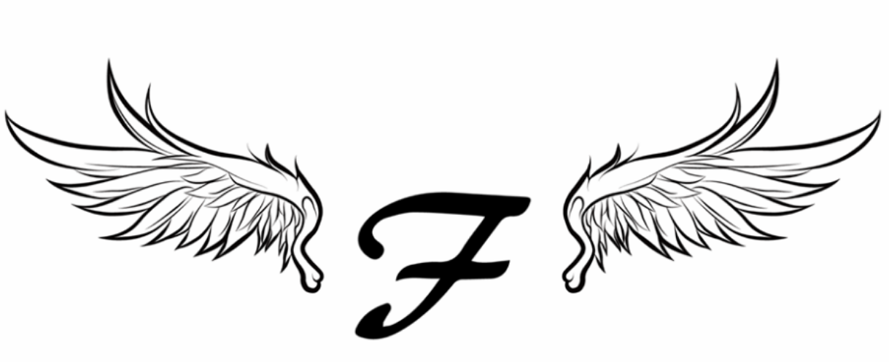

Freethinkers Union Happiness Council
프리띵커스 연합행복보장이사회

이사회 소개
최신 의결 결과
의결문안: 프리띵커스 설립 10주년을 맞아 프리띵커스 연합과 각 지부를 전부 해체한다.
찬성: 7
반대: 2
기권: 1
결과: 의결문안 가결
*의결권자 의견, 의결일자, 의결안 번호, 의결 문안, 의결 결과로 이루어짐
- 2011년 기록
- 2012년 기록
- 2013년 기록
- 2014년 기록
- 2015년 기록
- 2016년 기록
- 2017년 기록
- 2018년 기록
- 2019년 기록
- 2020년 기록